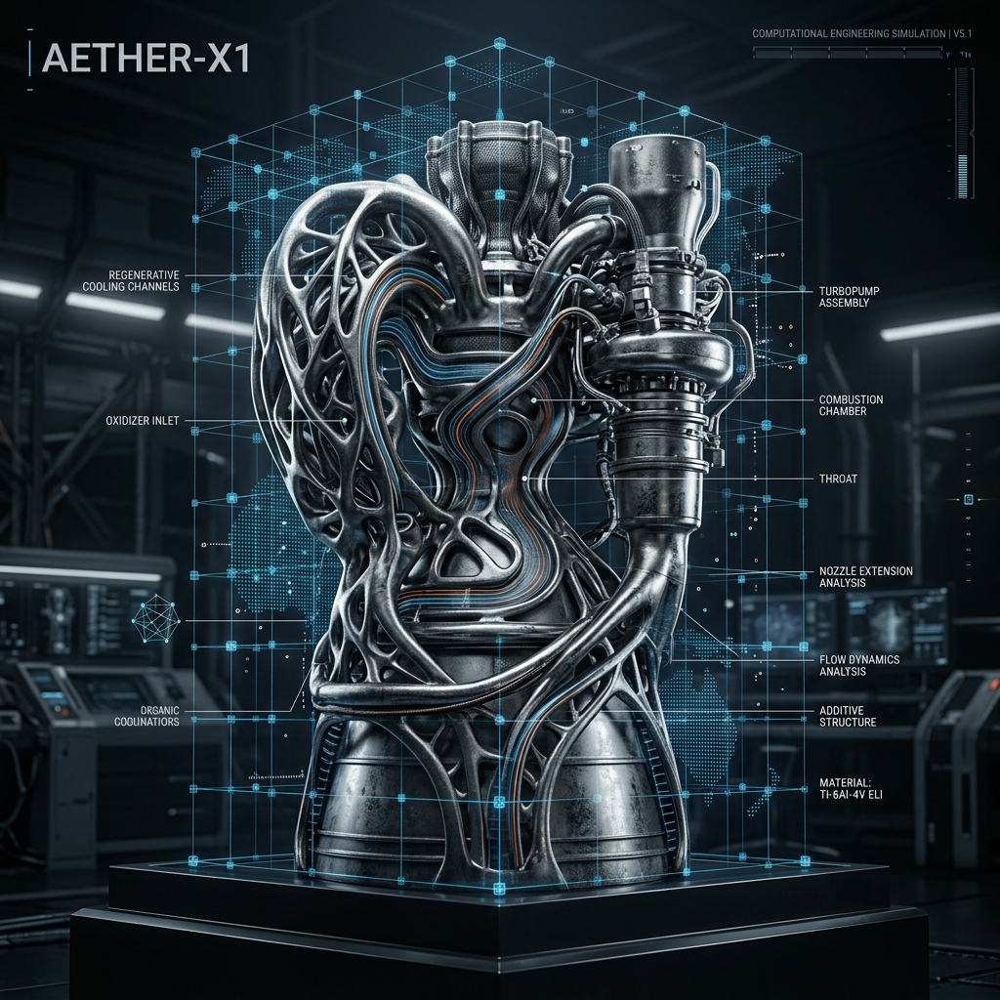

Physical Computational Engineering
Leap71
Leap71 致力于推动"计算工程"范式。通过编写算法代码（C#）表达物理物体的"几何与逻辑 DNA"，完美适配高精度金属 3D 打印，可在几分钟内自主生成航空级喷气引擎或高能热交换器。
- 代码即设计 DNA：物理方程式、热力学参数和制造约束编写为代码
- PicoGK 体素内核：高精度体素技术，支撑无限复杂的网格格栅结构
- Noyron CEM：确定性物理驱动的大计算工程模型，非神经网络
- 无缝增材制造：直接生成金属打印切片路径及 G-code